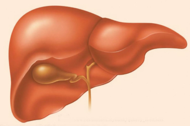
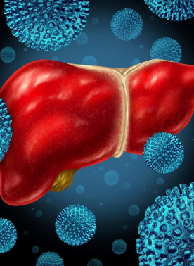

Гепатит В.
Острая и хроническая формы.
Методы диагностики и лечения
 Гепатит В — это острое или хроническое воспаление печеночной ткани, вызванное одноименным вирусом. Болезнь может протекать как с выраженными симптомами поражения печени, так и первично-хронически, бессимптом-но. По данным ВОЗ, лишь 10% больных гепатитом В знают о своей болезни и только 16,7% среди диагностированных лиц получают лечение1. При этом хронический гепатит В во много разповышает риски развития цирроза и рака печени. Ежегодно в мире от последствий заболевания погибает около 887 000 человек 2. В России за 2018 год выявлено около 62 тысяч новых случаев хронического гепатита В2. Показатели заболеваемости сильно отличаются в зависимости от региона РФ, что обусловлено разницей в качестве диагностики и полноте регистрации этого заболевания.
Классификация гепатита В
По клиническому течению различают острый и хронический гепатит. Хроническим считается воспалительный процесс, который продолжается более 6 месяцев. Острый гепатит классифицируют по степени тяжести на легкую, средне тяжелую и тяжелую формы.
По скорости развития печеночной недостаточности острый гепатит делят на:
- фульминантный — печеночная недостаточность развивается в течение недели после появления желтухи;
- острый — до 4 недель от появления желтухи;
- подострый — до 24 недель от появления желтухи.
Симптомы гепатита В
Острый гепатит В начинается, как правило, с преджелтушного периода, во время которого пациент жалуется на общее недомогание, слабость, снижение работоспособности. В это же время развиваются диспептические проявления — тяжесть и боль в правом подреберье, тошнота, рвота. потеря аппетита. Также возможны кратковременное повышение температуры, боль в суставах, кожная сыпь по типу крапивницы. Безжелтушный период продолжается от одной до четырех недель, после чего появляется желтуха, печень увеличивается в размерах, ухудшается общее самочувствие. В зависимости от степени тяжести заболевания возможно развитие проявлений печеночной недостаточности от легкой сонливости до печеночной комы. Нередки кровотечения (обычно из желудочно-кишечного тракта) из-за нарушения синтеза печенью белков-факторов свертывания.
Особенно неблагоприятно протекает острый гепатит при коинфекции (одновременном заражении) вирусом гепатита В и D (дельта). Возможно фульминантное (молниеносное) развитие болезни с быстрым нарастанием желтухи, появлением асцита и признаками острой печеночной недостаточности, вплоть до летального исхода. Хронический гепатит нередко проявляется бессимптомно. Могут присутствовать тяжесть и боль в правом подреберье (после употребления большого количества алкоголя или переедания), нарушение общего самочувствия: слабость, раздражительность, снижение работоспособности. В крови повышается уровень АСТ и АЛТ, ЩФ, но эти изменения характерны для большинства поражений печени, независимо от их природы. Выраженные симптомы, как правило, появляются на стадии цирроза: беспричинное исхудание, асцит, желудочно-кишечные кровотечения, тремор конечностей и другие проявления печеночной энцефалопатии.
Диагностика гепатита B
 Диагностика острого гепатита В осуществляется на основе характерной клинической картины и данных лабораторных исследований. В крови повышается содержание билирубина, активность АЛТ и АСТ возрастает более чем в 10 раз. Кроме того, в крови обнаруживаются маркеры вирусного гепатита В: HBsAg, антиНВсore IgM. Для диагностики хронического гепатита. В кровь исследуют на содержание HBsAg — поверхностного антигена вируса. Кроме того, в крови обнаруживаются маркеры вирусного гепатита В: HBsAg, антиНВсore IgM. Для диагностики хронического гепатита. Диагностика острого гепатита В осуществляется на основе характерной клинической картины и данных лабораторных исследований. В кровь исследуют на содержание HBsAg — поверхностного антигена вируса. Кроме того, в крови обнаруживаются маркеры вирусного гепатита В: HBsAg, антиНВсore IgM. Для диагностики хронического гепатита. В кровь исследуют на одержание билирубина, активность и содержание осуществляется на основе характерной клинической HBsAg — поверхностного антигена вируса. В крови повышается содержание билирубина, активность АЛТ и АСТ возрастает более чем в 10 раз.
Это обследование является скрининговым и, согласно санитарно-эпидемиологическим правилам, его обязаны проходить следующие группы лиц:
- женщины на I и II триместре беременности;
- доноры и реципиенты крови и ее компонентов;
- доноры спермы;
- сотрудники медицинских организаций;
- пациенты отделений гемодиализа, гематологии, трансплантологии;
- пациенты перед плановыми операциями;
- пациенты перед химиотерапией;
- пациенты наркологических и кожно-венерологических диспансеров;
- дети в учреждениях с круглосуточным пребыванием и персонал этих учреждений;
- лица в местах лишения свободы;
- лица, контактировавшие с больным гепатитом В;
- дети, рожденные от инфицированных матерей.
При необходимости определить не только факт заражения, но и активность инфекции (вирусную нагрузку) используют ПЦР-диагностику — прямое определение ДНК вируса и ее количества. Также с помощью ПЦР можно выявить мутации вируса, придающие ему устойчивость к тем или иным противовирусным средствам. Активность воспалительного процесса и тяжесть поражения печени оценивают с помощью гистологического исследования — изучения под микроскопом частиц ткани печени.
Комментарии